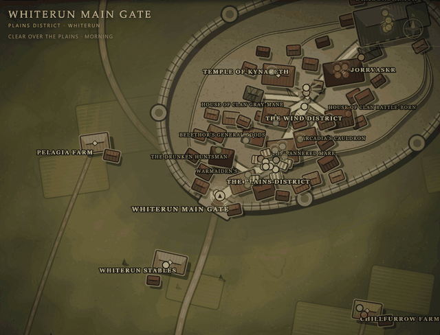
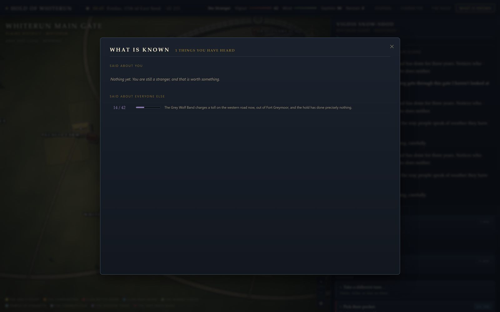

The idea
Everything the world knows is a fact. Facts live in people's heads, and people trade them when they are in the same room. When you do something — pick a pocket, break a bard's hand, hand a mother proof her son is alive — that becomes a fact with your name on it, seeded into whoever was standing there. From that point it spreads without any further input from you.
Reactions scale by how much the hearer cares about whoever the fact concerns, so news that Ysolda was robbed lands differently on Hulda than on Nazeem. When a fact reaches the watch, it becomes a bounty. A panel called What Is Known lists every fact you have heard and how many of the hold's forty-two people currently know it.
What is in the simulation
- Clock. Ten-minute steps. Every action costs time and the world runs while it passes.
- Schedules. Each NPC has a day. Eorlund is at the Skyforge by six and home by eight. Corvus only exists between midnight and four.
- Knowledge. Facts propagate between co-located NPCs, weighted by heat, freshness, and how much of a gossip the teller is. Secrets need trust to move at all.
- Opinion. Per-person disposition plus per-faction standing, with bonds between NPCs, so harming one person turns their friends against you.
- Crime. Witnesses are rolled against Guile. What nobody saw did not happen, until it is repeated.
- Quests. Six threads, most with genuinely different endings. Selling Olfrid your silence closes the Gray-Mane story as surely as telling Fralia the truth does.
The map
A heightfield with hillshading, contour lines, a snow line and a treeline, drawn once at load into an offscreen layer. Pins, labels and lighting composite on top each frame. Day/night tints the whole hold and window-light pools come up after dark. Pin colour is faction; a hollow pin means you have not met them, and a dim pin with an arc over it means they are indoors.
Layout
core/ holds the RNG, value noise and world clock. world/ is
content — the atlas of places and roads, the NPCs, factions, and the fact and item
definitions. sim/ is the simulation: state, world tick, gossip, crime, combat
and the log. game/ holds player actions, dialogue and quests, and
render/ draws the map. Adding a person is one entry in npcs.ts;
adding a place is one entry in atlas.ts.
Not done
Combat is a placeholder — strike, press, guard, flee. There is no save/load. Bleak Falls Barrow is mentioned and does not exist.